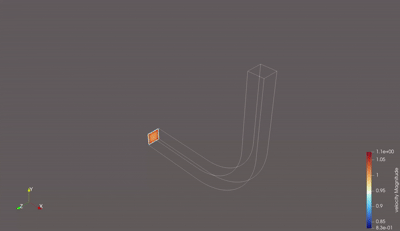
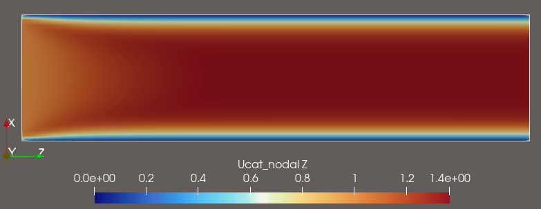

- Generated by
 1.9.8
1.9.8
|
PICurv 0.1.0
A Parallel Particle-In-Cell Solver for Curvilinear LES
|
PICurv is a parallel CFD and particle framework for incompressible flow and scalar transport. It combines:
DMDA based)DMSwarm based)./scripts/pic.flowThe user workflow is configuration-first: YAML inputs are validated and translated into generated runtime artifacts consumed by the C solver and postprocessor.


PICurv uses a two-way coupled Eulerian-Lagrangian strategy:
case.yml, solver.yml, monitor.yml, post.yml)cluster.yml) for Slurm job generation/submissionstudy.yml) with Slurm arrays, dependency chaining, and metric plotsprogrammatic_c, file, and grid_genFor release notes and recent contract changes, see Changelog. For solver-method overviews, see Methods and Models Overview.